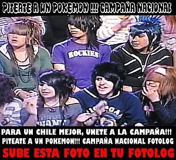

Síndrome de Ash Ketchum
 De: La Frikipedia, la enciclopedia extremadamente seria.
De: La Frikipedia, la enciclopedia extremadamente seria.
| De la serie enfermedades y padecimientos:
|
| Síndrome de Ash Ketchum
|
|
|
| Claro ejemplo de lo que esta enfermedad causa
|
|
| Nombre común
|
Síndrome de Ash Ketchum, ¿no lo había dicho ya?
|
| Clase
|
Enfermedades animescas
|
| Afecta a
|
Todo el cuerpo, pero las bolas en general
|
| Número de enfermos
|
¡¡¡más de 9000!!!
|
| Pruebas clínicas
|
como primero y principal, querer follar a un pokémon
|
| Extendida en
|
todo el cuerpo
|
| Diagnosis (síntomas)
|
despertar con un pokemon entre las piernas embarrado de un liquido blanco
|
| Tratamiento
|
te jodiste pobre pendejo o hayn
|
| Prognosis (expectativas)
|
Es incurable, una vez contagiado ya te jodiste no es posible curarse
|
| ¿Contagiosa?
|
mucho
|
| Dieta
|
Comida para pokémon
|
| Caso famoso
|
Gary Oak
|
El síndrome de Ash Ketchum es una enfermedad contagiosa descubierta por el profesor Oak durante uno de sus experimentos con niños de poca edad la cual afecta mayormente a los niños de 10 años provocando un desorden en sus cerebros y causando una larga serie de efectos secundarios que podrían resumirse cómo Pokéfilia...
Origen
El síndrome de Ash Ketchum o Cátsup debe su nombre a un famoso pokefílico quien fue la primera víctima registrada de este virus y gracias a la cual nunca se descubrió la cura.
 Estos son los verdaderos causantes, ¡¡Atrápalos ya!!
Esta enfermedad mental fué originada en el año de la pera, cuando se puso de moda eso de andar capturando pokémon gracias a que la T.V. era aburrida y aún no existía ni la Frikipedia ni el llu túv, entonces los niños de 10 años decidieron abandonar la escuela y sus casa para recorrer el mundo encarcelando "legalmente" a los pokémones en cápsulas rojas y esféricas para el disfrute personal (porque, claro, atrapar un pokémon causa un orgasmo de unos...3 segundos,tiempo minimo que tardas en decir superrapido "Jodanse todos, yo capture un Pokemon").
El virus empezó sólo en algunas colonias de Kanto y Yugoslavia. Hasta que poco a poco los niños se fueron transformando en pokéfilos, se compraron ratas amarillas y capturaron muchos pokémones.
Síntomas
Gracias a la UNAM, se han podido descifrar algunos de los síntomas más comunes de esta enfermedad, si usted posee alguno de ellos entonces es un friki acuda a nuestros médicos profesionales
- Preferir a los pokémon antes que a las chicas: Esta enfermedad causa un trastorno cerebral que le impide al usuario no fijarse en cosas que no tengan que ver con wombats mutados.
- Repetir frases estúpidas: El portador de esta enfermedad se verá obligado a gritar muy fuerte cosas como Seré el mejor entrenador Pokémon una y otra y otra vez.
- Cumplir años cada cinco y cambiarse de ropa cada diez: El metabolismo del paciente de este síndrome sera disminuido a tal punto en qué se mantendrá de diez años casi que para siempre, y nunca se cambiará la ropa que lleva puesta, pues en ella está impreganada la sangre, sudor y lágrimas que te llevaron atrapar a Magikarp.
- Querer más y más pokémones para
follártelos admirarlos: El afectado no verá saciada su hambre de atrapar pokémones por lo que este querrá seguirlos atrapando hasta la muerte o hasta que se acaben...más probable que sea lo primero.
- Tener todas las versiones de los juegos de Game freak pasadas al 101%: Debido al extremo cansancio que puede provocar arrojarle un cubo mágico a un pokémon, los pacientes suelen descansar de esta exhaustiva actividad atrapando pokémones virtualmente.
- Tener un rival: Ya que atrapar pokémons puede llegar a ser ligeramente aburrido, los sindromedarios suelen hacerse enemigos para masacrarse mutuamente con sus pokémons para ver quien relamente se convertirá en el mejor entrenador Pokémon y quien vale mierda.
- Recordarles a todos de donde vienes: El afectado en cuestión tendrá la necesidad de gritar su país de origen a todo el que se lo encuentre y más a los que no les importan.
Obtención del virus
Estudios recientes han demostrado que esta enfermedad afecta más a personas bajo ciertas condiciones que a otras, pero eso no quiere decir que no corras el riesgo de ser afectado. Las principales causas de contagiarse de este virus son:
- Tener 10 años.
- Gustarte los wombats.
- Ser friki
- Vivir cerca de un depósito de mamadas radioactivas.
- Vivir cerca de un depósito de pokémones.
- Ser un nippón.
- Que tu
único mejor amigo sea una rata.
- Tener un condimento por apellido.
- Venir de un lugar con un nombre estúpido como Pueblo Paleta o mongolia.
Sabias qué...
- Lo pokémones son inmunes al SIDA?
- Pero aún así lo transmiten?
- La pokéfilia está prohibida en 8 países incluyendo Afganistán?
- Violarte a un wombat también se considera como este síndrome?
- Algunos pokémones sólo evolucionan si te los follas?
- Tú eres un claro caso de este síndrome?
- IP anónima también?
Autor(es):
- Fordus
- Gatukura-xx-chameleon
- Gñapero Solitario
- Gatoisra
- Generibot
- GummyBear
- LIKE10115
- Abidan40
- Calitoweb
- Dancer
Frikipedia 2005-2016, Licencia
GFDL 1.2 - Extraído por FrikiLeaks